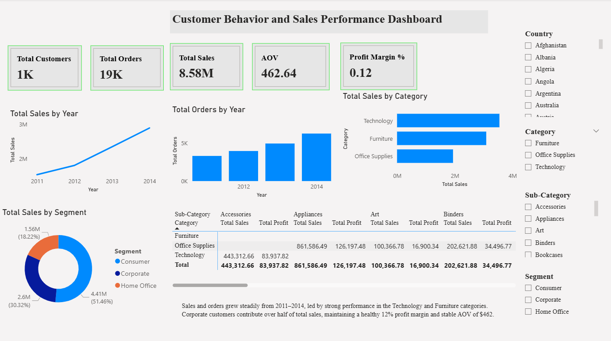

Customer Behavior and Sales Performance Dashboard (Power BI)

Project OverView
This Power BI dashboard provides a comprehensive analysis of customer purchasing behavior and sales performance using the Global Superstore dataset.
The project aims to help businesses identify key revenue drivers, understand customer segments, track performance trends, and evaluate profitability through interactive data visualizations.
Tools and Techniques
- Power BI Desktop: Data modeling, visualization, and KPI design
- Power Query Editor: Data cleaning and transformation
- DAX (Data Analysis Expressions):Custom measures for KPIs
- Star Schema Modeling: Fact and Dimension tables for optimized relationships
Dashboard Features
- KPI cards summarizing Total Customers, Orders, Sales, AOV, and Profit Margin %
- Time-series charts for Sales and Orders by Year
- Category and Segment analysis for Top-performing products and customer groups
- Interactive slicers for Country, Category, Sub-category, and Segment
- Matrix table for Sales and Profit by Product Category and Sub-category
- Insight text box summarizing business findings
Key Insights
- Sales and orders grew steadily from 2011 to 2014, showing strong business expansion.
- Technology and Furniture categories generated the highest revenue.
- Average profit margin remained stable at 12%, with an average order value of $462.
- Corporate customers contributed over 50% of total sales, showing their high value to the business.
This dashboard enables business leaders to monitor sales performance, identify high-value customer segments, and make data-driven decisions to improve profitability and growth strategies.
View Interactive Dashboard
Download Power BI File
Download Full Business Report